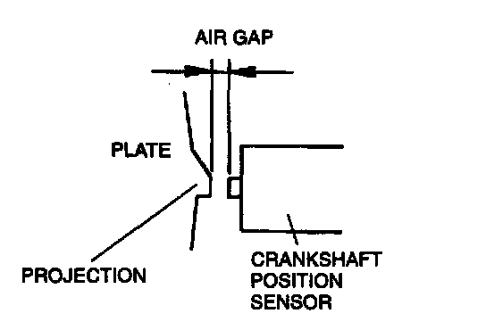

Crankshaft Position Sensor: Adjustments
1. Loosen the crankshaft position sensor installation bolt.2. While moving the crankshaft position sensor, adjust the air gap between the crankshaft position sensor and the tour projections on the plate by using a feeler gauge.

Specification: 0.5-1.5 mm (0.020-0.059 in)
3. Tighten the crankshaft position sensor installation bolt.
Tightening torque: 7.9-10.7 Nm (80-110 kg.cm, 69.5-95.4 in.lb)
4. If not adjusted, replace the plate behind the crankshaft pulley or the crankshaft position sensor.